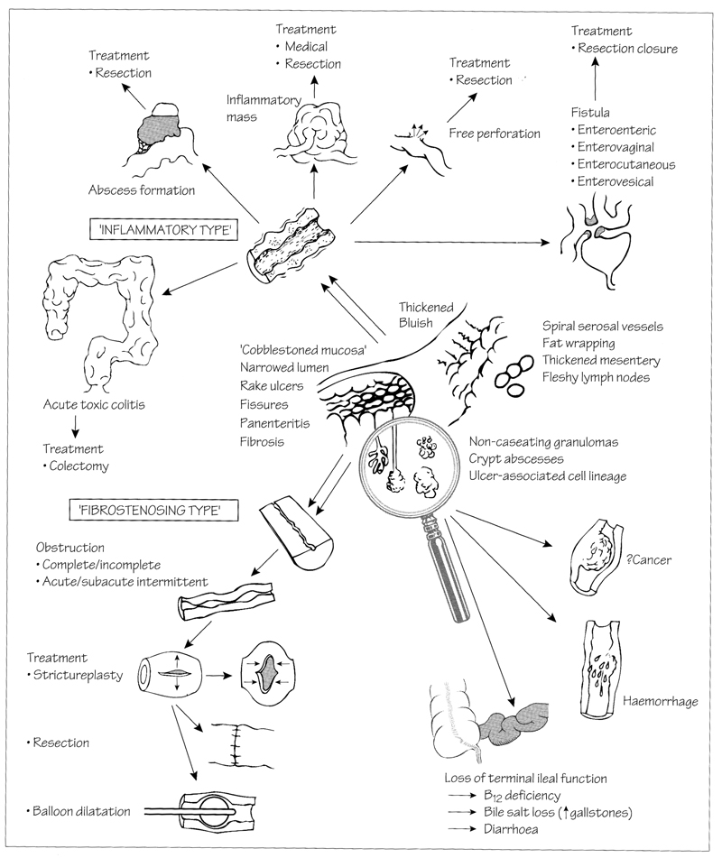
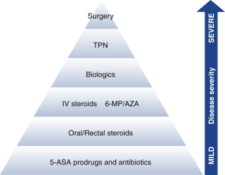
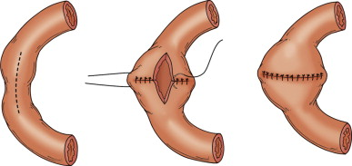
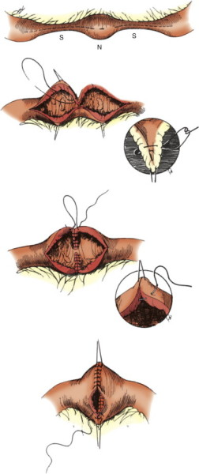
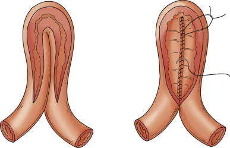

CROHN'S DISEASE
DEFINITION
A chronic transmural inflammatory disease that affects the GI tract
from mouse to anus and with septic, obstructive, haemorrhagic and
neoplastic complications.
top D I A B M
I M home
INCIDENCE
Increasing - prevalence 15/100,000
Most common in Northern European countries; developed world
Sex
Slightly more frequent in F.
Bimodal: 1) teens and twenties; 2) 60+
Risk Factors
Genetics:
2-15% of IBD pts in general have an affected 1st degree relative
30-50% concordance of Crohn's in monozygotic twins.
Smoking
Particularly for relapse.
top D I A B M
I M home
AETIOLOGY
Much in common with UC, but considered separate
Remains unclear
?Unknown infectious agent
?Mucosal barrier defect
?Genetic defect
1. Aberrant auto-inflammatory response
- theorized links with viruses, yeast, food antigens and
stress
- ?infectious agent, eg mycobacteria
2. Immune deficit
- IL-10 deficiency?
Associated with agammaglobulinaemia
Associated with HLA-B27 and seronegative spondyloarthropathies;
Also HLA-DR1 and DR2 implicated.
3. Genetics
NOD2/CARD15 gene associations
top D I A B M
I M home
BIOLOGICAL BEHAVIOUR
Pathophysiology
Thought mucosal immunity is stimulated then fails to down-regulate
- inappropriate exposure to luminal antigens?
T lymphocyte activation and genetic background alterations (eg in
cytokines) --> chronic inflammation
Pathology
Can occur mouth to anus.
30% colon alone, 40% small intestine alone (us TI), 30% both.
50% ultimately involve rectum.
Segmental or pan-colitis / continuous SB segments.
10% have isolated anal disease; 10% isolated jejunal disease.
Three major disease patterns
are identifiable:
(Vienna Classification)
i) inflammatory
ii) stricturing
iii) fistulizing
Key features:
1. Discontinuous skip lesions.
2. Begins as aphthous ulcers
in the epithelium, with lymphoid aggregates.
- patchy; mucosa shows a 'cobblestone' appearance.
3. Transmural inflammation
- neutrophil infiltrate; noncaseating granulomata (35%).
- ulcers become deep and fissuring, with fistula
formation.
- free perforation or local abscesses may
also occur
4. Fibrostenosis
- bowel wall thickens, becomes rubbery, oedematous; later stiff and
fibrotic.
- lumen narrows (string-sign
on XR) and may occlude altogether, or obstruct due to adhesions from
inflamed serosa.
- from outside segment looks a dull grey, and the mesenteric fat
wraps around the surface as 'creeping fat'.
- reactive lymphadenopathy is common
5. Crypt atrophy, metaplasia
(paneth cells, pyloric metaplasia).
- chronic inflammation; blunting
of villi

Natural History
Natural remission and recurrence, with emotional stress or unknown
precipitants.
Strictures
Repeat inflammation, resolution and remodeling.
--> thickened nonpliable bowel that eventually narrows lumen.
Modified by therapy
- but over time, becomes less responsive to therapy requiring more
aggressive options and ultimately surgery.
Fissures
To vagina, bladder, bowel, skin and perianal.
Extra-intestinal
Less common cf UC
Listed below
Recurrence
Tends to occur in the same location.
Complications
Subacute intestinal obstruction, fistulae (bowel to bowel, bladder,
vagina, ant. abdo wall)
Nutritional deficiencies due to malabsorption
- anaemia, hypoalbuminaemia
- soluble vitamins, C and B, and zinc.
- fat soluble vitamins: D, E, K, A absorption may be compromised.
Osteoporosis (malabsorption and therapy)
5-6x increased risk of bowel Ca over normal population.
top D I A B M
I M home
MANIFESTATIONS
Signs
Local
Pain may be diffuse or localized; especially RLQ
Usually worse after eating or pre-defecation
May ease with defecation.
Strictures
Obstruction usually sub-acute.
Fistulation
Common.
Diarrhoea and other faecal overgrowth symptoms (bowel)
Foul vomitus (stomach)
Pneumaturia/foul urine, dysuria (bladder)
Pain on sex, feculent discharge (vagina).
Abscesses
Psoas, skin abscess/discharge (rare, usually through scars).
Small bowel
Abdo pain, nausea, steatorrhoea (large, pale, bulky, float, foul),
other malabsorption, with diarrhoea, intermittent, and perhaps
anorexia and wgt loss.
- can develop a protein-losing enterropathy.
Colonic
Blood/mucus diarrhoea.
Rectal
Urgency, incontinence.
Perianal
Abscess, fistulae, with discharge.
Gastroduodenal disease
Nausea, vomiting and epigastric pain.
Systemic
Fever, chills, sweats.
Anaemia (B12, chronic disease) causes malaise, fatigue, tiredness,
headache, faintness, angina etc...
Children
Growth failure, small size, delayed puberty, bone pain common.
Women
In women, reduced fertility, increased spontaneous abortions.
Extra-intestinal manifestations
Skin rash, necrotic ulcer (gangrenosum pyoderma)
Arthritis, conjunctivitis, vasculitis symptoms.
Signs
Weight loss.
Inflamed joints, skin manifestations, mouth ulcers, aphthous
stomatitis, clubbing
Erythema nodosum (nodular, red, tender lesions, usually below knee),
pyoderma gangrenosum (tender, raised, ulcer/blister lesions, us. at
ankles.).
Perianal manifestations
Fissures, fistulae, oedematous skin tags.
Skin ulcers
Often at vulva, submammary regions, extremities.
Complications
Fistulae, peritonitis, obstruction, stones, hepatic, malignancy,
pancreatic.
top D I A B M
I M home
INVESTIGATIONS
Bloods
FBC - anaemia, B12, folate.
ESR.
Albumin.
CRP.
Imaging
CT has replaced Barium enema
Wall thickening, mesenteric fat stranding, abscesses.
Endoscopy
Essential for diagnosis with ileal intubation
- nb in 10% cannot differentiate from UC; "indeterminant colitis"
Shows strictures, dilations, fistulae in affected GI tract.
Small bowel series
Looks for segmental SB involvement
Differentials
Exclude UC
Exclude infectious colitis, e.g. ova and parasites
top D I A B M
I M home
MANAGEMENT
Multidisciplinary = key.
Conservative
Treat nutrient deficits.
Elemental diet (low molecular nutrient) effective
Cease smoking; reduces relapses by 50%.
Medical
In general, stricturing disease is less
responsive to med therapy.

Schema.
- usually bottom-up approach
- but some hit mild disease hard in the hope of altering the course.
1. 5-ASA
Aminosalicylate derivatives; sulfasalazine and mesalamine.
Anti-inflammatory agents.
Effective in active disease;
70% response.
Oral, enemas, suppositories, retention enemas
Often given as maintenance
(no evidence for efficacy).
Do not use NSAIDs - worsens disease.
Not associated with bleeding; no need to withhold for surgery.
2. Antibiotics
Metronidazole and cipro commonly used in mild colonic crohn's
colitis.
Beware c-diff associated with prolonged use.
3. Steroids
Benefit in active disease
- e.g. 40-60 mg prednisolone daily on a rapid tapering course once
symptoms resolved.
Orally, rectally and IV when severe.
Response in ~70%
No proven benefit in maintenance.
Recurrent use has severe side effects:
- growth retardation, hypertension, osteopenia, cushingoid,
nephritis, cataracts, necrosis of the femoral head, adrenal
suppression.
- do not forget stress dose of steroids peri-operatively.
4. Immunosuppressives
Steroid-sparing and used to maintain
remission.
Effectiveness ~50%
Azathioprine is the most widely used (50-70% remission rate).
Also 6-mercaptopurine.
5. Biologics
Monoclonal TNF-a antagonist, e.g. infliximab
Used in active disease and
role developing in maintenance
Role in pts unresponsive to steroids, antibiotics and
immunomodulators.
Side effects include immune reactions, infusion reactions, lymphoma.
Surgical
70% will need surgery, 50% re-operation
Management is essentially medical
until complications develop
Principles
Incidence of patients coming to surgery remains static
1. Not curative; focused on controlling symptoms
2. Cautious, conservative, clear-cut indications
- exhaust non-surgical routes before surgery.
- preserve bowel; target symptomatic and severely diseases segments
only
- will likely require future surgery; avoid short-gut syndromes.
- loss of TI associated with loss of fat, fat-soluble vitamin and
bile salt absorption; diarrhoea.
3. Address underlying nutritional, fluid and electrolyte
abnormalities.
- prior to surgery
4. Bowel prep, DVT and antibiotic prophylaxis.
5. Beware their meds: steroid stress dose and biologics risk
infections.
6. Map disease extent: colonoscopy, upper endoscopy, CT,
enteroscopy, small bowel studies.
7. Prepare pt for unexpected surgery requirements intra-operatively
incl stoma; e.g. 50% fistulas discovered at surgery.
8. Full laparotomy
9. Passing a Foley can help define narrowed segments for resection
or stricturoplasty.
- inflate to 2cm and pull through. If it doesn't pass,
consider for stricturoplasty.
10. Preserve bowel length.
- alternative strategies to resection hwere possible.
11. Biopsy anything suspicious
Indications:
Acute
Perforation and abscess
Acute severe colitis
Toxic megacolon
Major bleeding
Subacute
Dysplasia / neoplasia
Abscess
Stricture and obstruction
Fistula
Malnutrition
Refractory diarrhoea
Elective
Failed medical treatment (most common)
Steroid dependence / need to wean
Pt wants to avoid side effects (biologics can be potent)
Growth retardation
Relative indication
Extracolonic manifestations
Stricture and Obstruction
Most strictures eventually require surgery.
Consider adhesions as less likely to be responsible for the episodes
of obstruction, even after several surgeries.
Attempt conservative management of the obstruction.
Steroids may be effective if inflammatory and not fibrotic.
Endoscopic dilation of fibrotic strictures is an option in the right
hands.
- long term outcomes unclear; but prevents surgery
Biopsy all strictures to detect cancer.
Recurrent strictures are usually not at anastomotic sites.
Use of Stricturoplasty in Crohn's
Useful because preserves length while relieving obstructive
symptoms.
Indications
Generally small bowel only; in LB, resection is standard
particularly wrt risk of neoplasms in strictured segments.
1. Diffuse involvement of small bowel with strictures
2. Prior small bowel resections >100cm
- need at least 100-125cm of SB to avoid supplemental IV
alimintation / hydration; physiologic adaptation.
- always document bowel length at end of surgery
3. Rapid recurrence with obstruction.
4. Obstructing fibrotic SB stricture without sepsis
Contraindications
Low albumin.
Free or contained perforation.
Fistulas near site
Stricture close to a resection site
Multiple strictures within a short segment.
Any stricture with hint of cancer.
Complications
Include haemorrhage (2%), leak (1%), and bowel obstruction,
recurrence
Risk factors for complications include low albumin, poor nutrition,
emergency operations, sepsis / abscess.
Risk factors for recurrence include younger pts, short disease
duration.
Technical Notes
Key to success is defining scope and nature of past and current
disease activity.
1. Colonoscopy and biopsy to rule out cancer if possible; and/or
frozen section at surgery.
- especially if there is a mass or ulcer
2. Explore abdomen and document pathology, bowel length, assess
strictures
3. Assess internal bowel diameter by passing a Foley catheter with
balloon
- pass along bowel then inflate to ~1.5cm in diameter (12-15mL) and
retract to test for strictures.
4. Consider single vs multiple stricturoplasties carefully; will
affect leak risk rate
5. Incise bowel wall along antimesenteric margin.
6. Extend incision 1-2cm beyond diseased segment.
7. Obtain excellent haemostasis.
- bleeding from suture site is a frequent and bad complication
8. Close in one layered fashion with PDS
9. Label mesentery at stricturoplasty site with a metal clip.
- will also help post-op targeting of bleeding sites by selective
mesenteric angiography with intra-arterial vasopressin infusion.
Choice of procedure.
Depends on length of stricture.
Short <10cm:
Fix like a pyloroplasty: open longitudinally and close
transversely to recreate length.

If two strictures side by side, can join all up together:

Medium 10-20cm:
Finney procedure

Bowl is folded, and loop bought alongside one another.
Long enterotomy and essentially side-side loop developed
Hand-sewn usually required
Alternatively, could just bypass the segment, but then get bacterial
overgrowth and degeneration, plus loss of length.
Not isoperistaltic, but empties fine by pressure gradient.
Long >20cm:
Side to side isoperistaltic technique
Results
Acceptable morbidity and recurrence rates
Relieves obstructions improving food tolerance and reduction in
steroids.
Reoperation rate 15-30% depending on number of stricturoplasties
performed.
Can result in complete morphologic disease regression, unsure why
inflammation resolves.
- may be a consequence of local environmental factors.
Perforation and Abscess
Best detected by CT.
Conservatively manage abscesses, drain, abs, bowel rest.
Surgical treatment if not responsive.
- laparotomy / laparoscopy and washout.
- resection of involved portion.
May be immunosuppressed; diverting stoma for colonic joins.
Interval surgery often eventually required once acutely settled.
Fulminant Colitis
High mortality if perforates; experienced vigilance and early
operation if at risk of perf.
Symptoms similar to UC, abdo distension, SIRS, megacolon (rare in
crohn's).
Conservative management, bowel rest, fluids.
ICU, specialist care, steroids if not infected.
Beware immunosuppression can mask seriousness.
Dysplasia / Neoplasia
Risk elevated; 3x normal population.
Surveillance same as for UC.
SB also at risk
Operate if neoplasia, high-grade dysplasia or mass with dysplasia.
Low-grade dysplasia management is controversial.
Major Bleeding
Uncommon indication.
Colonoscopy with diagnostic and therapeutic intent.
Mesenteric angiography unlikely to help.
Subtotal colectomy and end-ileostomy routine but know source first
else may leave bleeding source from rectum.
Fistulation
Commonly TI to sigmoid, but any close organ.
Investigate with contrast studies, endoscopy, cystoscopy.
If minimal symptoms, may defer surgery, until quality of life or
antibiotic dependence mandates it.
Reports of resolution with infliximab, but majority require
segmental resection with en-bloc resection of the fistula.
Large fistulas eg proximal to distal bowel will require surgery
- need only resect side with active inflammation and close the
'bystander' bowel primarily in a transverse direction.
- e.g. resect inflamed TI segment but primarily close the sigmoid
excision defect.
Treat cutaneous, vaginal, bladder
- close bladder in two layers
- vaginal and uterine often heal spontaneously after resection of
primary segment.
Can overlay repair with omentum.
Extracolonic Manifestations.
May resolve with surgery, except PSD and ank spond.
Emergency Operative Strategy
Midline incision, expect repeat access necessary and anticipate
ostomies.
Be particularly cautious with thickened mesentery which is prone to
bleeding.
Beware splenic flexure; leave to last for maximal control in case of
spillage of stool.
Usual course in colinic crohn's is total / subtotal colectomy and
terminal ileostomy.
Rectum left intact (proctectomy is a major, morbid procedure).
- reserved for unremitting bleeding with failure of all conservative
approaches; rare.
Close rectal stump unless inflamed, then produce a mucous fistula
into lower end of wound.
- if concern but not clear, bury closed stump in the bottom of the
laparotomy wound.
Rectal drain; large Foley.
Avoid drains unless specific reason such as indurated abscess walled
off region
Proctectomy
More than half of pts having subtotal with require completion
colectomy at some point.
Indicated for proctitis, neoplastic risk.
Perineal dissection should be in intersphincteric plane for
inflammatory disease.
End ileostomy.
Segmental Colectomy
Try to preserve colon esp if SB resections and esp ileocaecal valve.
But higher overall recurrence than subtotal.
Option in limited number of patients with segmental stricture or
fistula.
Confirm suspect fistulas intraoperatively.
- e.g. fill bladder with methylene blue to localize a leak.
If suspect but uncertain, urinary catheter and cystogram post-op
prior to removal.
Want anastomosis on healthy bowel.
- sufficient to judge this visibly; microscopic disease at margin
does not predict recurrence.
Fecal diversion if gross sepsis.
Careful anastomosis; avoid leak(!), check marginal flow, be safe.
Total Abdominal Colectomy with
Ileorectal Anastomosis.
Possible if rectum spared; better QOL without ileostomy.
Counsel that recurrence risk means failure rate in 50% with need for
proctectomy.
Assess rectal compliance (sigmoidoscopy) and sphincters (PR) - if
narrow stiff rectal remnant then function will be poor.
Ileal pouch?
- standard in UC but traditionally contraindicated in Crohn's due to
recurrence.
- OK in highly selected patients; improves reservoir and irritation.
- but failure rate near 50%.
Pan-proctocolectomy with terminal
ileostomy
Widespread colorectal involvement and often perianal disease.
Rectal dissection difficult; some say stay close to muscles within
mesoretal plane.
But most do a standard resection and achieve low complication rates.
Perineal dissection through sphincters, smaller wound, better
healing; these are sometimes very difficult to heal.
Stricturoplasty
Favourable risk/benefit ratio
Longer operative time
Increased bleeding, decreased recurrence, preserved bowel,
Laparoscopic?
Lower morbidity and improved outcomes in the right hands.
Shorter stay, functional recovery.
Contraindications to
Stricturoplasty
Perforation neoplasia
Fistula
Severe malnutrition
Abscess (relative)
Long narrow segments
- can resect mid point and do a side to side isoperistaltic
stricturoplasty.
Relapse Rate?
Endoscopic recurrence 50% by 1 year
Symptomatic recurrence rate 35-65% at 5 years.
Physicians will often prescribe medical therapy within 10d of
surgery to attempt recurrence reduction.
- eg flagyl 3mo course
- azathioprine reduces by 50%
- biological role developing.
top D I A B M
I M home